1. Lecture Objectives
This lecture introduces self-supervised learning as a modern paradigm that bridges supervised and unsupervised learning by leveraging large amounts of unlabeled data. We begin by comparing data requirements and training structures across supervised, unsupervised, and self-supervised learning. We then study the self-supervised learning pipeline, including pseudo-label generation, pre-training, and downstream fine-tuning. Next, we examine common pre-text tasks such as transformation prediction, masked prediction, deep clustering, and contrastive learning, with a detailed look at the SimCLR framework. Finally, we discuss contrastive learning applications, the emergence of foundation models, and the growing importance of self-supervision in modern AI systems.
2. Foundation Models
Foundation models represent a major shift in modern machine learning . Instead of training task-specific models from scratch, large models are first trained on massive and diverse datasets using self-supervised learning (the pre-training stage), and are later adapted to many downstream tasks.
In this paradigm, pre-training leverages unlabeled data to learn general-purpose representations. The resulting pre-trained model is referred to as a foundation model, which can then be adapted to downstream tasks.
This training pipeline can be summarized in three stages:
Pre-training (Self-Supervised Learning): Learn general representations from large-scale unlabeled data
Fine-tuning: Adapt the model to specific downstream tasks using labeled data
Alignment (optional): Further refine model outputs using human feedback or task-specific constraints
Notably, the pre-training stage corresponds directly to the self-supervised learning objectives discussed in this lecture.
2.1 Recent Developments
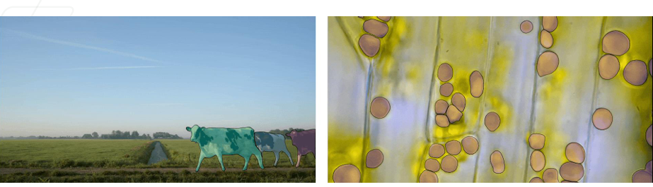
One prominent example of a modern foundation model is the Segment Anything Model (SAM), released by Meta in April 2023 . As shown in Fig. 1, SAM was trained on an unprecedented dataset containing 1.1 billion segmentation masks from 11 million images. This scale enables the model to generalize across diverse visual domains and perform segmentation without task-specific training.
2.2 Historical Evolution
The rise of foundation models can be understood through the evolution of deep learning architectures.
Prior to 2019, most computer vision systems relied on convolutional architectures such as VGG and ResNet. These models were typically trained in a fully supervised manner for specific tasks.
After 2019, the field experienced a major transition with the introduction of transformer-based architectures and large-scale self-supervised training. Models such as BERT, GPT, DALL-E, and Flamingo demonstrated that training on massive unlabeled datasets could produce general-purpose representations adaptable to many tasks . This shift marks the emergence of the foundation model paradigm.
2.3 Applications and Impact
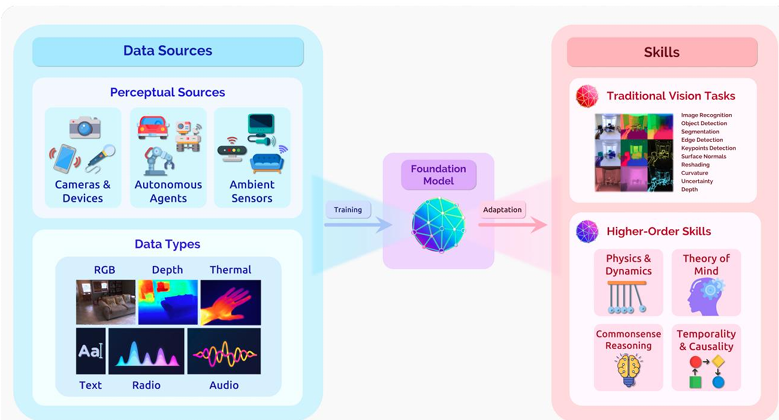
Foundation models leverage transfer learning at scale . As illustrated in Fig. 2, these models are trained using diverse data sources and modalities, enabling the emergence of shared representations that transfer across tasks. Increasing model scale often leads to the emergence of higher-level reasoning and generalization capabilities.
The impact of foundation models spans many domains, including healthcare, embodied interactive perception, visual knowledge distillation, and temporal and commonsense reasoning. This paradigm reflects the central theme of this lecture: large-scale self-supervised learning enables the development of flexible, general-purpose representations that transfer across tasks.
3. Key Insights and Conclusions
3.1 Pseudo-Label Generation
A central idea of self-supervised learning is the design of effective pseudo-labels. The success of this paradigm relies heavily on the creativity used to construct meaningful pre-text tasks that generate supervisory signals directly from unlabeled data. Importantly, pseudo-labels must maintain a meaningful relationship with the true downstream labels so that the learned representations remain useful for real-world tasks. When designed properly, the features learned from pseudo-labels closely align with those required for supervised learning, enabling strong transfer and generalization.
3.2 Future Directions
Self-supervision at scale has become a fundamental component of modern AI systems. As datasets and model sizes continue to grow, foundation models trained using self-supervised objectives are expected to play an increasingly dominant role across domains. The continued evolution of these models will further expand their applications, shaping the future of machine learning and artificial intelligence.
4. Comparison of Data Requirements and Structures

As illustrated in Fig. 3, the primary difference between modern learning paradigms lies in how supervisory signals are obtained and how models are trained.
Supervised Learning
Supervised learning relies on explicitly labeled datasets consisting of input–output pairs \((x,y)\), where \(x\) represents the input data and \(y\) denotes the corresponding ground-truth label. The primary objective is to learn a mapping function \(f(x)\rightarrow y\) that generalizes well to unseen data. During training, the model parameters are optimized by minimizing a task-specific loss function \(L(\hat{y},y)\) that measures the discrepancy between predictions and true labels. While this paradigm often achieves strong performance, it requires large quantities of high-quality labeled data, which can be expensive and time-consuming to obtain.
Unsupervised Learning
Unsupervised learning operates without ground-truth labels and instead uses only unlabeled data \(x\). The goal is to discover the underlying structure, patterns, or distribution of the data. A common formulation involves learning a mapping \(f(x)\rightarrow\hat{x}\) that reconstructs the input, as in autoencoders. The model is trained by minimizing a reconstruction-based or distributional loss \(L(\hat{x},x)\), encouraging the learned representation to capture meaningful properties of the data. This paradigm eliminates the need for labeled datasets, but it does not explicitly define the downstream task during training.
Self-Supervised Learning
Self-supervised learning (SSL) bridges the gap between supervised and unsupervised learning by creating supervisory signals directly from unlabeled data. Instead of relying on manual annotations, SSL introduces carefully designed pre-text tasks that automatically generate pseudo-labels \(z\) from the raw data \(x\). The model first learns useful representations by solving these auxiliary tasks and is later fine-tuned on a downstream task using a smaller labeled dataset. The key distinction between SSL and unsupervised learning is the presence of structured supervisory signals derived from the data itself, enabling the model to learn more task-relevant and transferable representations .
Weakly-Supervised Learning
Weakly-supervised learning uses labels that are noisy, imprecise, or less informative than fully supervised labels. These labels are often easier and cheaper to obtain, but introduce uncertainty in the training process. The goal is to learn robust representations despite imperfect supervision.
Semi-Supervised Learning
Semi-supervised learning combines a small amount of labeled data with a large amount of unlabeled data. The model leverages labeled examples for supervision while using unlabeled data to improve generalization. This approach lies between supervised and unsupervised learning in terms of supervision strength.
5. Self-Supervised Learning (SSL) Structure
Self-supervised learning (SSL) follows a three-stage pipeline designed to learn powerful representations from large-scale unlabeled data and then adapt them to downstream tasks. The process consists of pseudo-label generation, self-supervised pre-training, and supervised fine-tuning.
Generate Pseudo-Labels

The first stage focuses on constructing artificial supervision directly from unlabeled data. Given a large dataset \((x_1,\dots,x_N)\), a carefully designed pre-text task \(P\) is applied to automatically generate pseudo-labels \((z_1,\dots,z_N)\). These pseudo-labels act as training targets without requiring human annotation. In some scenarios, a small labeled dataset \((x_1,\dots,x_M),(y_1,\dots,y_M)\) may also be available, but it is not required at this stage. The output of this step is a new pseudo-labeled dataset \((x_1,\dots,x_N),(z_1,\dots,z_N)\) that enables supervised-style training. Fig. 4 illustrates how pre-text tasks transform unlabeled data into pseudo-labeled data.
Pre-Training on Pseudo-Labels

In the second stage, the pseudo-labeled dataset is used to train a neural network \(h_\theta\). The network learns to predict pseudo-labels by minimizing a self-supervised loss \(L(z,\hat{z})\), where \(z\) represents the pseudo-label and \(\hat{z}\) is the predicted output. This step is known as self-supervised pre-training. The goal is not to solve the final task directly, but rather to learn a general and transferable representation that captures meaningful structure in the data. After this stage, the network \(h_\theta\) becomes a powerful feature extractor trained using large-scale unlabeled data, as shown in Fig. 5.
Fine-Tuning for Downstream Tasks

The final stage adapts the learned representation to a specific downstream task. The pre-trained network \(h_{\theta^*}\) is reused either as a fixed feature extractor or as an initialization for further training. A task-specific head \(g_\phi\) (for example, a classifier) is attached and trained using labeled data \((x_1,\dots,x_M),(y_1,\dots,y_M)\). The model is optimized using a standard supervised loss \(L(\hat{y},y)\). This step is called fine-tuning and enables strong performance even when labeled data is limited. Fig. 6 shows how the pre-trained network is adapted to downstream tasks.
6. Different Pre-text Tasks in Self-Supervised Learning
Self-supervised learning relies on carefully designed pre-text tasks to create supervisory signals directly from unlabeled data. These tasks encourage models to learn meaningful visual representations before being adapted to downstream tasks. Unlike traditional unsupervised learning, which often relies on generic reconstruction or density estimation, pre-text tasks provide targeted supervision that guides representation learning toward useful semantic features.
6.1 Transformation Prediction
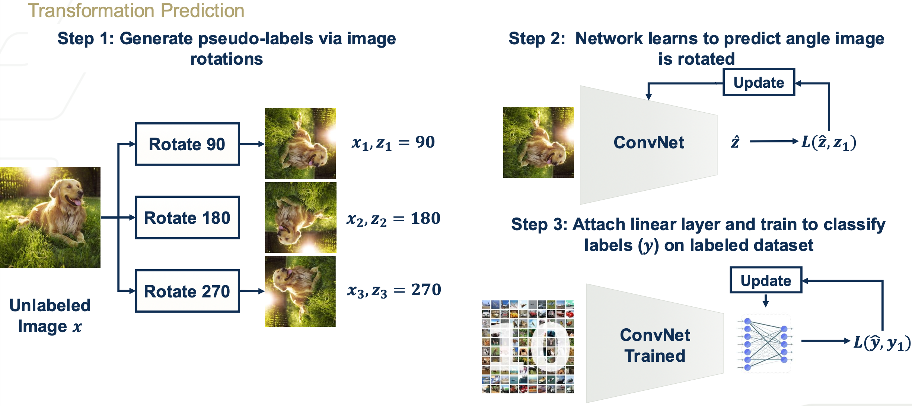
Transformation prediction applies known transformations to input data and trains the model to identify which transformation was applied. The transformation itself becomes the pseudo-label. For example, an image can be rotated by \(90^\circ\), \(180^\circ\), or \(270^\circ\), and the model is trained to predict the rotation angle. To perform well, the network must understand the semantic structure of the image (e.g., object orientation and shape). As illustrated in Fig. 7, the learned representation can later be reused for downstream classification tasks.
6.2 Masked Prediction
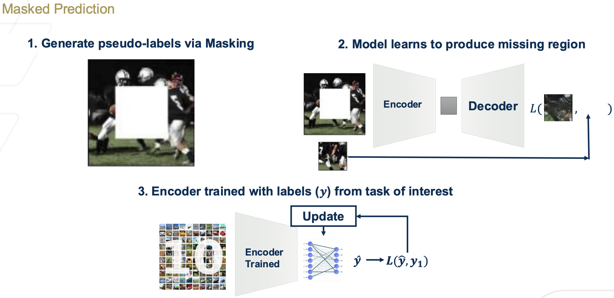
Masked prediction removes a portion of the input and trains the model to reconstruct the missing content. This forces the network to learn contextual and structural relationships within the data. A common approach masks a region of an image and trains an encoder–decoder architecture to predict the missing pixels. This idea is the foundation of many modern models, including masked autoencoders and language models such as BERT . Fig. 8 illustrates how the network learns to reconstruct missing regions.
6.3 Deep Clustering
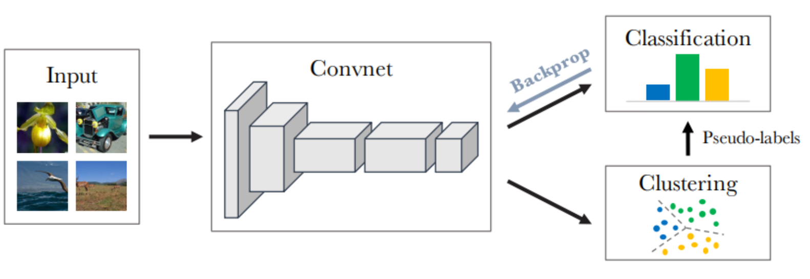
Deep clustering combines representation learning with clustering algorithms to iteratively generate pseudo-labels. First, features are extracted from unlabeled data using a neural network. These features are then grouped into clusters, and the cluster assignments are treated as pseudo-labels for supervised training. The network is retrained using these pseudo-labels, and the process is repeated. Over time, this iterative procedure refines the representation and improves clustering quality. The overall workflow is illustrated in Fig. 9.
6.4 Contrastive Learning
Interactive Notebook: Section 3 — Self-Supervised Learning & SimCLR
Explore pretext tasks (rotation, masking, jigsaw, colorization) and SimCLR contrastive learning. See how the latent space clusters improve with more SSL pretraining.
Contrastive learning has become one of the most influential self-supervised approaches . The core idea is to learn representations by comparing positive pairs and negative pairs. Positive pairs are different augmentations of the same data point, while negative pairs are augmentations from different data points. The model is trained using a contrastive loss that maximizes similarity between positive pairs and minimizes similarity between negative pairs. As shown in Fig. 10, this encourages the model to learn invariant and highly discriminative feature representations. This topic will be explored in more detail in the following section.
7. Self-Supervised Learning Objectives and Loss Functions
7.1 Contrastive Objectives and InfoNCE Loss
A central idea in modern self-supervised learning is the use of contrastive objectives, which aim to learn representations by distinguishing between positive and negative pairs of data. One of the most widely used formulations is the InfoNCE loss.
Given an anchor sample \(x_i\), a positive sample \(x_j\) (an augmented view of the same data point), and a set of negative samples \(\{x_k\}\) from different data points, the InfoNCE loss is defined as:
\[\mathcal{L}_{\text{InfoNCE}} = -\log \frac{\exp(\text{sim}(z_i, z_j)/\tau)}{\sum_{k} \exp(\text{sim}(z_i, z_k)/\tau)}\]
where \(\text{sim}(\cdot,\cdot)\) denotes cosine similarity and \(\tau\) is a temperature parameter.
This objective encourages representations of positive pairs to be close while pushing apart representations of negative pairs. InfoNCE forms the foundation of many contrastive learning methods, including SimCLR, MoCo v2, and NNCLR, which differ primarily in how positive and negative pairs are constructed and sampled.
The effectiveness of InfoNCE has led to a family of contrastive self-supervised methods that rely on explicit negative samples. However, reliance on negative samples introduces challenges such as sampling bias and large batch requirements. This motivates alternative formulations that do not require negative pairs.
7.2 Decorrelation-Based Objectives
An alternative approach to self-supervised learning avoids the use of negative samples entirely. Instead, these methods enforce statistical constraints on learned representations, such as variance preservation and feature decorrelation.
A representative formulation includes objectives that:
Encourage invariance between representations of augmented views
Maintain sufficient variance across feature dimensions
Reduce redundancy by decorrelating features
These principles lead to losses used in methods such as VICReg and Barlow Twins.
A representative decorrelation-based loss can be written as a combination of three terms:
\[\mathcal{L} = \mathcal{L}_{\text{inv}} + \mathcal{L}_{\text{var}} + \mathcal{L}_{\text{cov}}\]
where:
\(\mathcal{L}_{\text{inv}}\) enforces similarity between augmented views,
\(\mathcal{L}_{\text{var}}\) ensures each feature dimension has sufficient variance,
\(\mathcal{L}_{\text{cov}}\) penalizes correlations between feature dimensions.
Together with contrastive objectives based on InfoNCE introduced earlier, these decorrelation-based objectives define two major families of self-supervised learning methods, which will be explored through representative frameworks in the following section.
7.3 Relation to Anomaly and OOD Detection
It is important to distinguish self-supervised learning (SSL) from related concepts such as anomaly detection and out-of-distribution (OOD) detection.
SSL focuses on learning meaningful representations from unlabeled data by solving pretext tasks (e.g., contrastive or reconstruction-based objectives). The goal is not to explicitly identify anomalies or detect distributional shifts, but rather to learn features that capture the underlying structure of the data. However, learning a structured representation does not guarantee separation between normal and anomalous samples, since SSL objectives are not explicitly designed to model rarity or distributional boundaries.
In contrast:
Anomaly detection aims to identify rare or unusual samples that deviate from normal patterns.
OOD detection focuses on identifying inputs that fall outside the training distribution.
Although SSL does not directly solve these problems, the representations learned through SSL are often used as a foundation for downstream tasks such as anomaly detection and OOD detection, where better feature representations can significantly improve performance.
8. Contrastive Learning Frameworks
After introducing contrastive learning as an important pre-text task, we now examine a widely used practical framework and its impact on modern machine learning systems.
8.1 SimCLR Framework
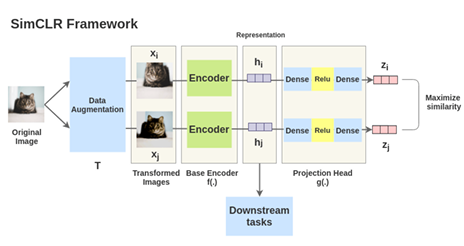
SimCLR is a representative contrastive learning framework built upon the InfoNCE objective, described in the previous section, that learns visual representations by constructing positive and negative pairs within a training batch . As illustrated in Fig. 11, the method consists of several key stages.
First, image augmentation is applied to each input image to generate two different transformed views of the same sample. These augmented views form a positive pair, while augmented views from different images form negative pairs.
Next, both augmented images are passed through a shared encoder network to produce latent representations \(h_i\) and \(h_j\). These representations are then processed by a small projection head, which maps them into a lower-dimensional embedding space, producing embeddings \(z_i\) and \(z_j\).
The framework then performs similarity computation using cosine similarity between embeddings. Training is driven by the InfoNCE contrastive loss, which encourages embeddings of positive pairs to be close while pushing embeddings of negative pairs apart . Finally, the loss is averaged across the batch, enabling efficient batch-based optimization. After training, the projection head is discarded and the encoder is used for downstream tasks.
8.2 VICReg Framework
While contrastive methods such as SimCLR rely on the InfoNCE loss, decorrelation-based objectives provide an alternative approach to self-supervised learning. VICReg (Variance-Invariance-Covariance Regularization) is a representative method built on this principle.
VICReg is based on three components:
Invariance: Encourages representations of augmented views to be similar
Variance: Prevents collapse by maintaining sufficient variance across features
Covariance: Reduces redundancy by decorrelating feature dimensions
The overall loss is defined as:
\[\mathcal{L}_{\text{VICReg}} = \lambda \mathcal{L}_{\text{inv}} + \mu \mathcal{L}_{\text{var}} + \nu \mathcal{L}_{\text{cov}}\]
Unlike contrastive methods, VICReg does not require negative samples and avoids representation collapse through explicit regularization terms.
8.3 Performance Comparison: Contrastive vs. Supervised Learning
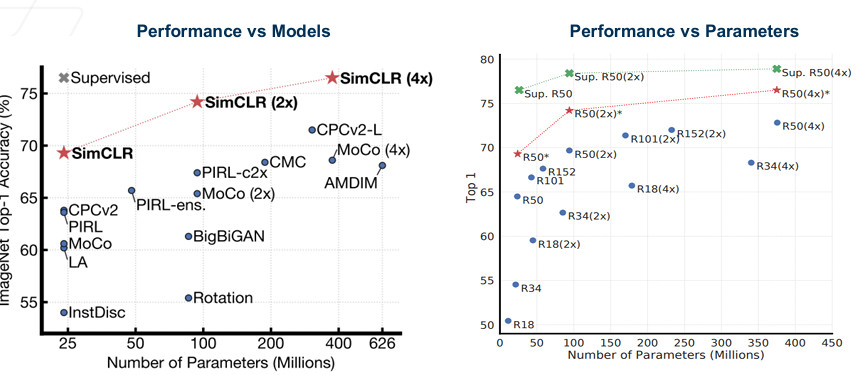
Recent empirical results demonstrate that large-scale contrastive learning can rival or even surpass traditional supervised learning . As shown in Fig. 12, models trained using self-supervision achieve competitive ImageNet accuracy while using fewer labeled examples.
This shift has led to a modern training paradigm in which models are first trained using self-supervised objectives to learn general-purpose representations, and are then fine-tuned using supervised learning for specific tasks. Notably, many foundation models and large language models follow this training strategy, highlighting the growing importance of self-supervised learning at scale.
9. Variations of Self-Supervised Learning Methods
Different self-supervised learning methods can be understood as modifications to the underlying learning objective. In particular, many contrastive methods can be interpreted as modifying either the numerator or denominator of the InfoNCE loss, while decorrelation-based methods modify the objective to operate across feature dimensions.
9.1 Variations of Contrastive Methods
Recall the InfoNCE loss:
\[\mathcal{L}_{\text{InfoNCE}} = -\log \frac{\exp(\text{sim}(z_i, z_j)/\tau)}{\sum_{k} \exp(\text{sim}(z_i, z_k)/\tau)}\]
This formulation consists of:
Numerator: similarity between a positive pair
Denominator: similarity between the anchor and all other samples (including negatives)
Different methods modify these two components in distinct ways.
NNCLR: Modifying the Numerator
NNCLR (Nearest-Neighbor Contrastive Learning) changes how positive pairs are constructed.
Instead of using only augmented views of the same sample, NNCLR selects a nearest neighbor in the representation space as the positive example. The numerator becomes:
\[\exp(\text{sim}(z_i, z_{\text{NN}(i)})/\tau)\]
where \(z_{\text{NN}(i)}\) is the embedding of the nearest neighbor of sample \(i\).
Interpretation:
Expands the notion of similarity beyond strict augmentations
Encourages clustering of semantically similar samples
Makes the objective more robust to augmentation design
Thus, NNCLR can be viewed as modifying the numerator of InfoNCE to incorporate neighborhood structure in the representation space.
MoCo v2: Modifying the Denominator
MoCo v2 (Momentum Contrast) modifies how negative samples are constructed.
Instead of relying only on the current mini-batch, MoCo maintains a memory queue of past embeddings. The denominator becomes:
\[\sum_{k \in \mathcal{Q}} \exp(\text{sim}(z_i, z_k)/\tau)\]
where \(\mathcal{Q}\) is a large queue of negative samples.
Interpretation:
Provides a much larger and more diverse set of negatives
Improves stability compared to small-batch contrastive learning
Approximates a richer estimate of the data distribution
Thus, MoCo can be viewed as modifying the denominator of InfoNCE to improve negative sampling.
This modification also has an important theoretical interpretation. From a theoretical perspective, these methods can be viewed as improving the estimation of the underlying data distribution. NNCLR enriches the set of positive samples, leading to a better approximation of semantic similarity, while MoCo improves the denominator by providing a larger and more stable set of negative samples. Together, these methods refine the contrastive objective as an approximation to a density-ratio estimation problem.
9.2 Variations of Decorrelation-Based Methods
Decorrelation-based methods depart from contrastive learning entirely by removing the need for negative samples. Instead of comparing across samples, they impose constraints across feature dimensions.
Dimension-Contrastive Perspective
In contrastive learning, the objective operates across samples: \[\text{pull positive samples together, push negative samples apart}\]
In decorrelation-based methods, the objective operates across feature dimensions: \[\text{encourage independence and diversity across features}\]
This can be viewed as a form of dimension-contrastive learning.
Barlow Twins
Barlow Twins enforces that the cross-correlation matrix between two views is close to the identity matrix.
Interpretation:
Diagonal terms enforce invariance (similar representations)
Off-diagonal terms enforce decorrelation (independent features)
BYOL and DINO
BYOL and DINO avoid collapse without negative samples by using:
Teacher–student architectures
Momentum updates
Implicit regularization through prediction asymmetry
Interpretation:
These methods rely on architectural asymmetry rather than explicit negative sampling
They still implicitly encourage high-dimensional representations
Connection to Dimensionality
All decorrelation-based methods can be interpreted as directly enforcing:
High variance across dimensions
Low redundancy between dimensions
This connects directly to the earlier discussion on dimensional collapse, where the goal is to prevent representations from collapsing into a low-dimensional space.
Thus, while contrastive methods operate across samples, decorrelation-based methods operate across dimensions, providing an alternative mechanism for learning rich representations.
10. Dimensionality in Representation Space
A critical aspect of self-supervised learning is the structure of the learned representation space. Effective representations should preserve meaningful variation across data samples while avoiding collapse to trivial solutions.
Dimensional collapse occurs when representations map to a low-dimensional subspace or a constant vector, resulting in loss of information and poor downstream performance. This phenomenon is illustrated geometrically in Fig. 13.
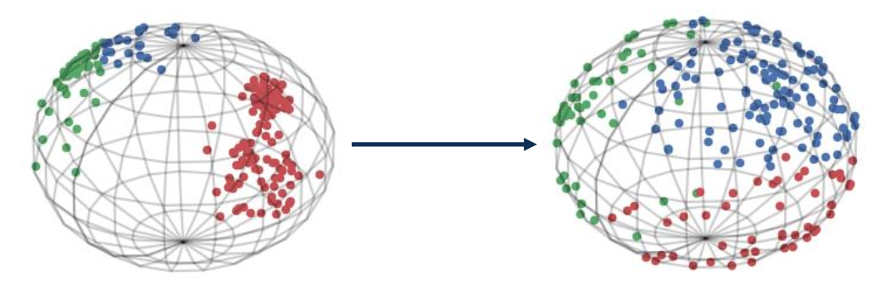
Contrastive methods such as those based on InfoNCE implicitly prevent collapse by enforcing separation between samples through negative pairs. However, decorrelation-based methods explicitly enforce diversity in the representation space.
For example, in VICReg:
The variance term ensures each feature dimension maintains sufficient spread
The covariance term reduces redundancy between feature dimensions
These mechanisms encourage the model to learn high-dimensional, information-rich representations, which are critical for generalization.
This perspective highlights that modern self-supervised objectives operate not only across samples, but also across feature dimensions to preserve diversity and prevent collapse.
11. Domain-Specific Self-Supervised Learning
Self-supervised learning can be adapted to domain-specific settings by designing pre-text tasks and similarity relationships that reflect the structure of the data. In these cases, the construction of positive and negative pairs is guided by domain knowledge rather than generic data augmentations.
In domain-specific settings, contrastive learning is adapted by redefining how positive and negative pairs are constructed. Rather than relying solely on generic data augmentations, domain knowledge is used to encode meaningful relationships within the data.
11.1 Domain-Specific Pair Construction
The key differentiating factor among contrastive learning approaches is the strategy used to generate positive and negative pairs. In computer vision, positive pairs are often constructed using data augmentations of the same image. In domain-specific settings, however, positive relationships may be defined using spatial regions, temporal consistency, patient identity, or semantic similarity. Thus, contrastive learning adapts naturally to the structure of the data.
11.2 Example Applications
Fisheye Images
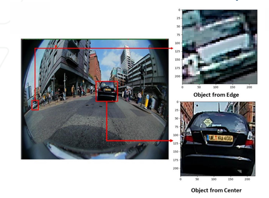
In fisheye image analysis, spatial distortion varies significantly across regions of the image. As shown in Fig. 14, one approach treats different spatial regions as distinct semantic categories.
Two complementary loss components can be defined:
\(\mathbf{L_{\text{class}}}\): Objects of the same semantic class are treated as positive pairs, regardless of their spatial position.
\(\mathbf{L_{\text{region}}}\): Objects located in the same spatial region are treated as positive pairs, regardless of class.
These objectives are combined using a weighted loss:
\[L = \alpha L_{\text{class}} + (1-\alpha) L_{\text{region}}\]
Alternative partitioning strategies include square-based divisions, radial partitioning, or grid-wise segmentation, as illustrated in Fig. 15.
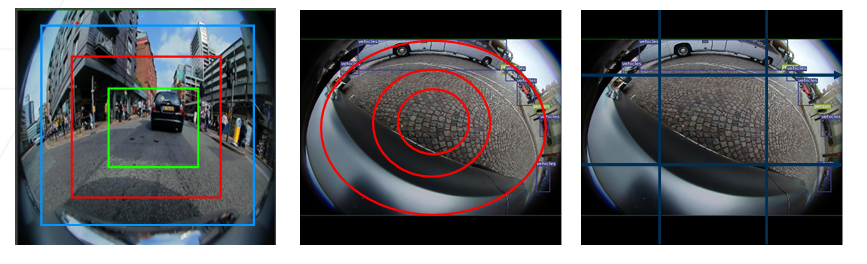
This example highlights how domain geometry influences pair construction.
Seismic Images
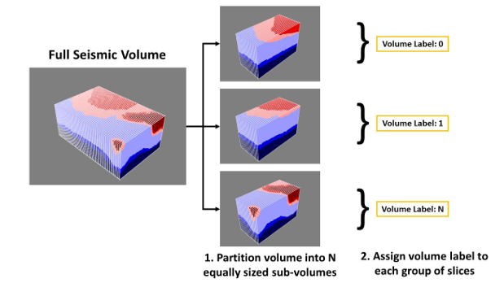
In seismic imaging, the data is volumetric rather than planar. As illustrated in Fig. 16, the full seismic volume (e.g., \(100 \text{ km} \times 100 \text{ km} \times 25 \text{ km}\)) is partitioned into \(N\) equal sub-volumes. Each sub-volume is assigned a pseudo-label, and slices from the same volume are treated as positive pairs.
This formulation transforms a structural geospatial property into a supervisory signal. The contrastive objective encourages the model to learn spatially consistent geological representations.
Medical Images
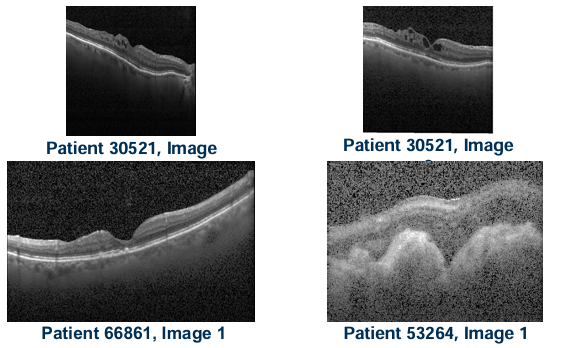
In medical imaging, positive and negative pairs can be defined using patient identity or clinical characteristics. As shown in Fig. 17, images from the same patient may be treated as positive pairs, while images from different patients form negative pairs. Alternatively, images sharing similar diagnoses can be grouped as positives.
This approach leverages domain-specific metadata to define meaningful similarity relationships.
11.3 Contrastive Learning in Other Modalities
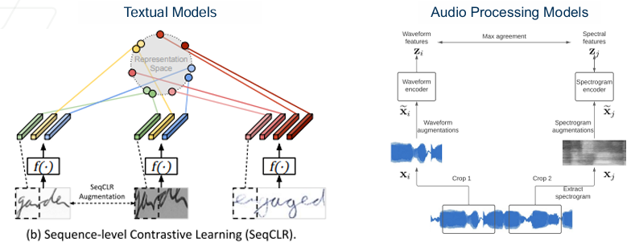
Although contrastive learning gained prominence in computer vision, it has been successfully extended to other modalities. In textual models, positive pairs may consist of different augmentations of the same sentence or semantically similar text spans. In audio processing, positive pairs can be constructed using different augmentations of the same waveform or spectrogram segment. Figure 18 illustrates representative architectures.
These examples demonstrate the versatility and generality of contrastive learning across diverse data types. The unifying principle remains the same: representations are learned by structuring similarity relationships within the data.
13. References
[]
Y. LeCun, Y. Bengio, and G. Hinton. Deep learning. Nature, 2015.
T. Chen, S. Kornblith, M. Norouzi, and G. Hinton. A Simple Framework for Contrastive Learning of Visual Representations. ICML, 2020.
J. Devlin, M. Chang, K. Lee, and K. Toutanova. BERT: Pre-training of Deep Bidirectional Transformers. NAACL, 2019.
R. Bommasani et al. On the Opportunities and Risks of Foundation Models. arXiv, 2021.
A. Kirillov et al. Segment Anything. ICCV, 2023.
K. He et al. Masked Autoencoders Are Scalable Vision Learners. CVPR, 2022.